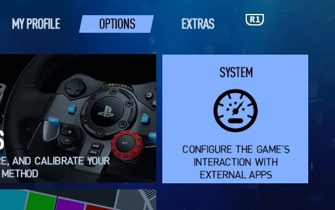
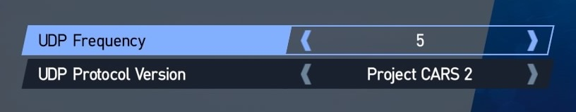
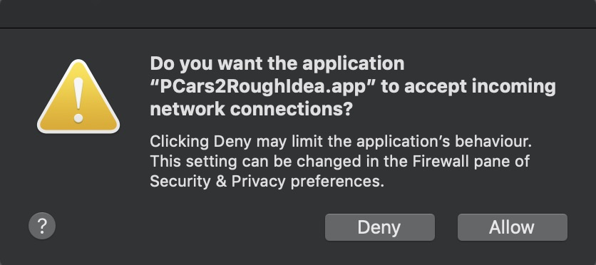
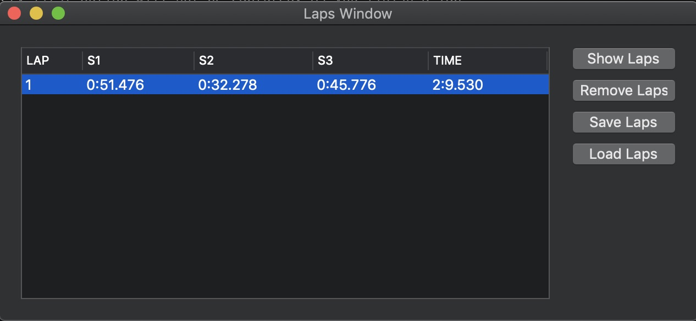
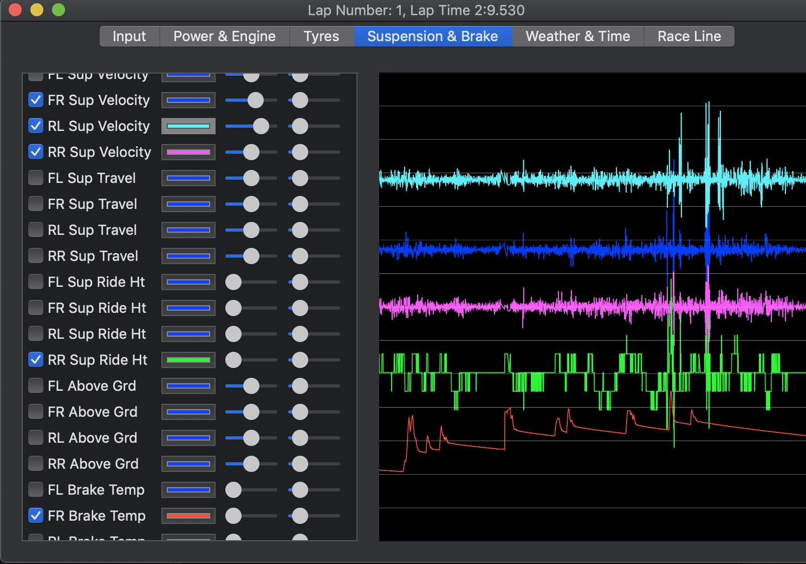
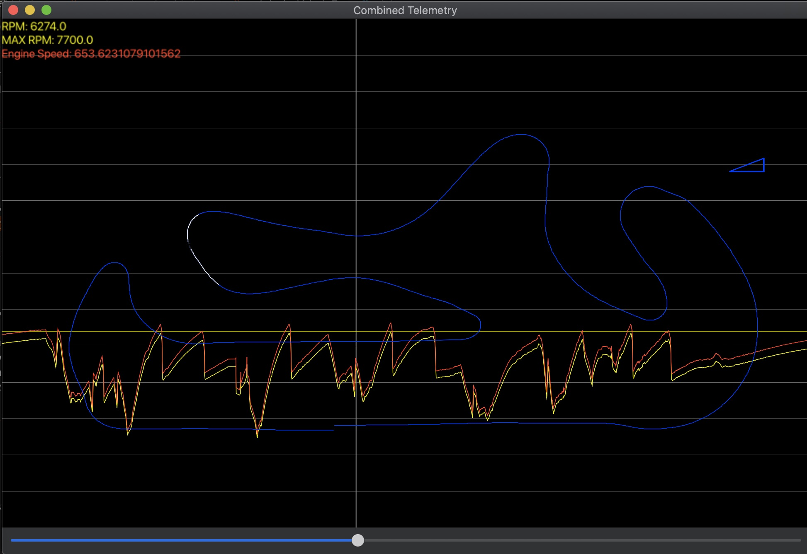

Get StartedGet Started
Get StartedGet StartedRough Idea Project Cars 2 is a post lap telemetry viewer for the Project Cars 2 racing simulator on PlayStation 4.
Your PlayStation 4 and your Mac must be on the same network, for example if you are using Wifi on the PlayStation and your Mac they should have the same SSID.
Insert the Project Cars 2 Racing Sim disk into your PlayStation 4 and start Project Cars 2. In Project Cars 2 go to the the Options tab and select the System pane.
Setting the UDP Frequency depends on your Mac's resources, experiment with this value to suit your system. The UDP Protocol Version must be set to Project Cars 2.
MacOs needs your permission to allow this application to receive packets from your PlayStation 4.
Go out on track and do some laps, note the very first outlap will not be captured. As you finish a lap the lap will appear in the Laps Window. There is a little processing going on after the lap is complete and the lap may not appear immediately. Select the lap or laps that you want to analyse and press the Show Laps button. See Laps Window for more info.
In the lap window you can select a tab for a type of telemetry and then select specific telemetry to view. See Lap Window for more info.
You can compare multiple laps telemetry in the Combined Window. See Combined Window for more info.
